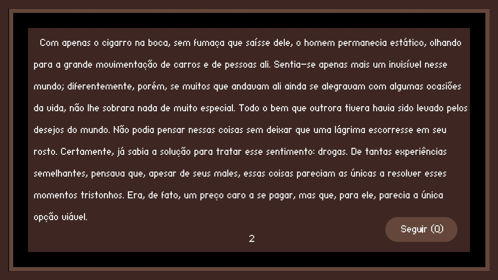
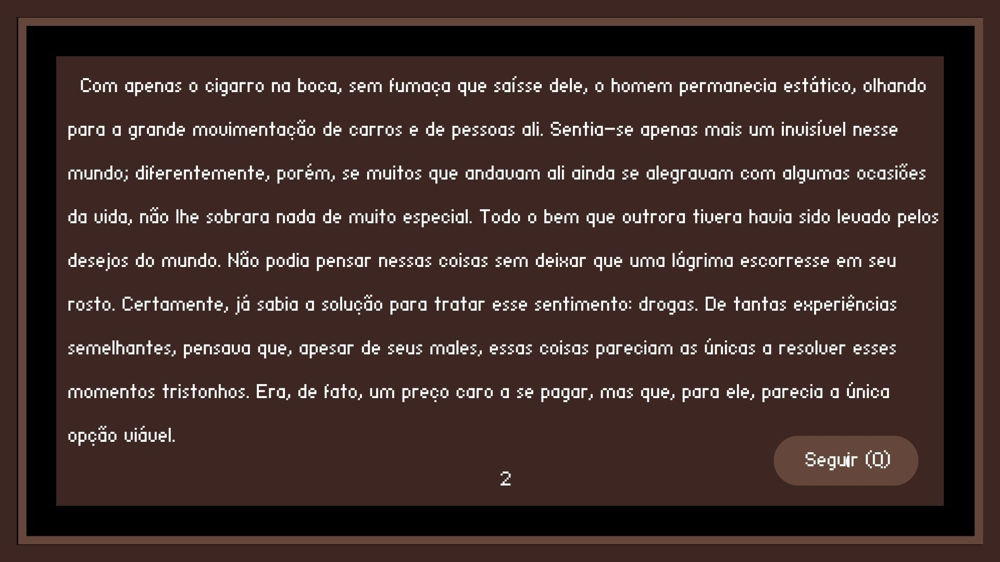
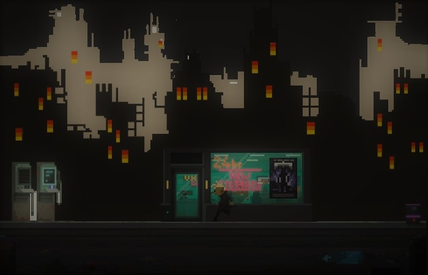
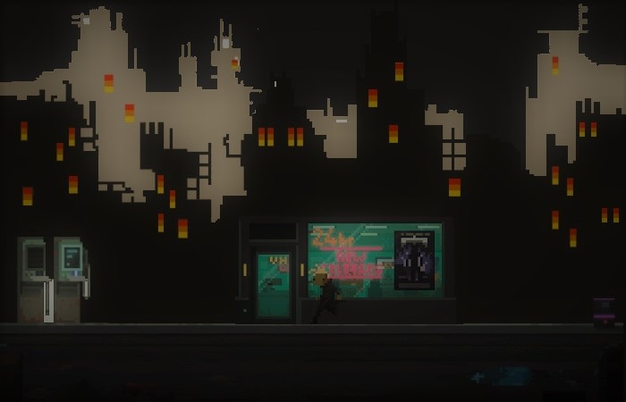

Parafron
História
Parafron é um jogo que procura explorar a relação entre o homem, a sociedade e alguns males do mundo, como as drogas. Nesse sentido, o protagonista da história, chamado Ivan, que é um solitário morador de rua há alguns anos, imerge o jogador em sua vida, mostrando a abundância de suas batalhas interiores, seus vícios, tentações, e tristezas. O homem, mesmo nessa fase, ainda sente a falta da convivência com as coisas boas, como sua família. E assim se segue por um curto tempo, até que um outro sujeito, alcunhado Clarence Odbody, aparece a Ivan se apresentando como seu ‘anjo da guarda’. E, para descobrir o que de fato ele quer e, assim, prosseguir a narrativa, é necessário que o jogador passe por dois minigames que terão relação com as lutas interiores do protagonista.
 

Jogabilidade
A jogabilidade de Parafron se baseia, inicialmente, no avanço entre os diálogos anteriores aos jogos. Para isso, basta que o jogador aperte ‘Q’. Começando o primeiro minigame, então, existe uma jogabilidade básica de movimentação vertical, a fim de que se possa desviar das colisões com as barras. No segundo minigame, por sua vez, há a movimentação vertical e horizontal, a fim de que se possa desviar dos objetos que caem e também, apertando a tecla ‘J’, há a possibilidade de atirar para destruir esses mesmos objetos.
 

Personagens
Há, basicamente, três personagens na narrativa: Ivan, o protagonista, é um homem de meia-idade, indigente e viciados em drogas; Clarence, seu anjo da guarda, que simboliza o mestre de sua consciência que quer levá-lo para o bom caminho; e Fiódor, o anjo mau, que simboliza o lado mau de sua consciência.